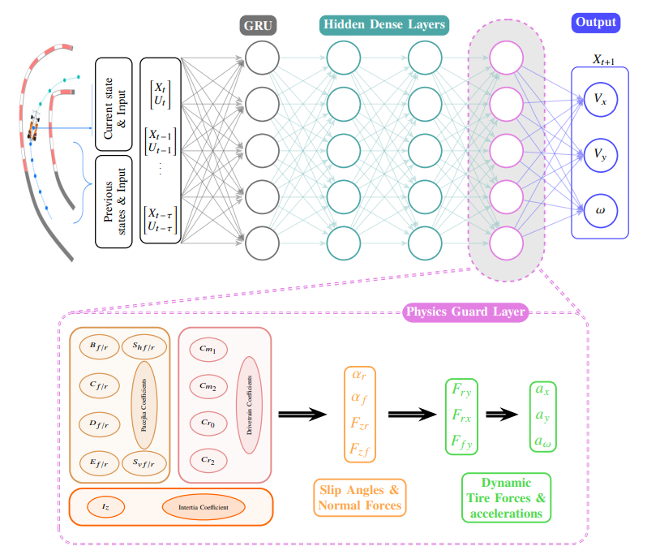

A hybrid neural network model that integrates physics priors with learned dynamics components.

This project introduces Learning-Enhanced Physics-Aware Vehicle Dynamics (LE-PAVD), a hybrid modeling framework designed for high-fidelity autonomous navigation under uncertainty. The approach integrates first-principles vehicle dynamics with neural network components to capture complex nonlinear behaviors that are difficult to model analytically.
In parallel, we develop CAPE (Control Algorithm Performance Evaluation), a systematic benchmarking framework that evaluates control strategies using learned dynamics models in open-loop and closed-loop settings. Together, LE-PAVD and CAPE enable reliable simulation, prediction, and control validation for autonomous systems operating in uncertain environments.
The LE-PAVD model extends the classical single-track vehicle model by incorporating load-sensitive tire forces, dynamic load transfer, suspension effects, and actuator dynamics. A neural network is embedded within the model to learn residual dynamics, allowing the system to capture discrepancies between simplified physics and real-world behavior.
For control evaluation, CAPE leverages the learned dynamics to assess multiple controllers, including PID, RISE, Nominal NMPC, and Robust NMPC, under varying levels of noise and uncertainty. The framework evaluates performance using trajectory tracking metrics such as cross-track error, stability, and robustness to disturbances, enabling fair and systematic comparison across control strategies.
Experimental results demonstrate that LE-PAVD achieves significantly improved predictive accuracy compared to baseline data-driven and physics-only models, particularly under distribution shifts and noisy conditions. The model enables stable and reliable long-horizon predictions, which are critical for control applications.
Using CAPE, we show that Robust NMPC consistently outperforms other controllers in terms of stability and disturbance rejection, while simpler controllers exhibit degraded performance under increasing uncertainty. The integrated framework provides a comprehensive pipeline for developing, evaluating, and deploying autonomous navigation algorithms in realistic scenarios.